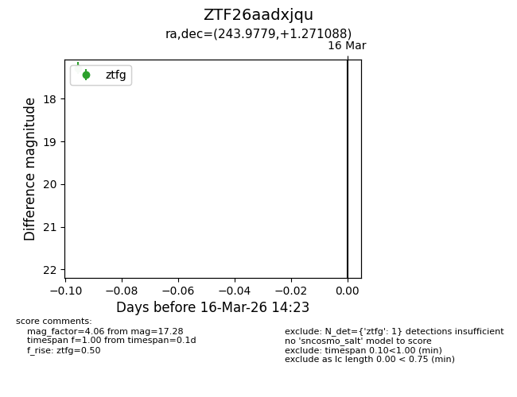
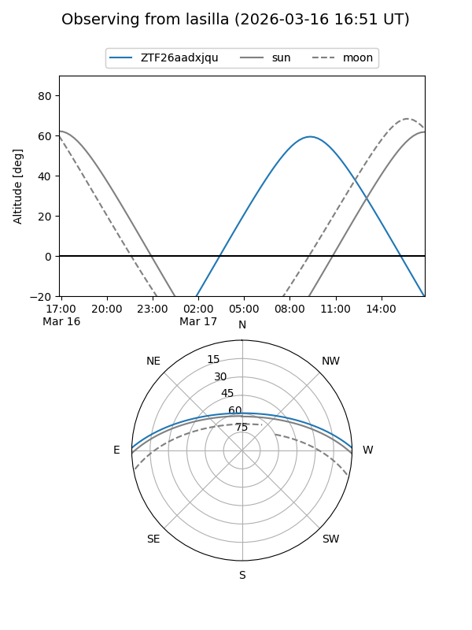
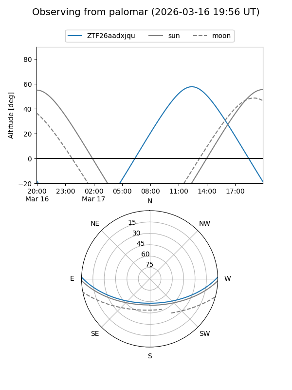

ZTF26aadxjqu
Target ZTF26aadxjqu at 2026-03-16 14:27
Aliases and brokers:
FINK: link
Lasair: link
ALeRCE: link
alt names
ZTF26aadxjqu (ztf,fink_ztf)
Coordinates:
equatorial (ra, dec) = 243.9779,+1.27109
equatorial (HMS+DMS) = 16:15:54.71,+01:16:15.92
galactic (l, b) = (14.0347,+34.65502)
Flags:
Photometry:
last ztfg=17.28
1 ztfg detections
Lightcurve

Visibility


Additional plots